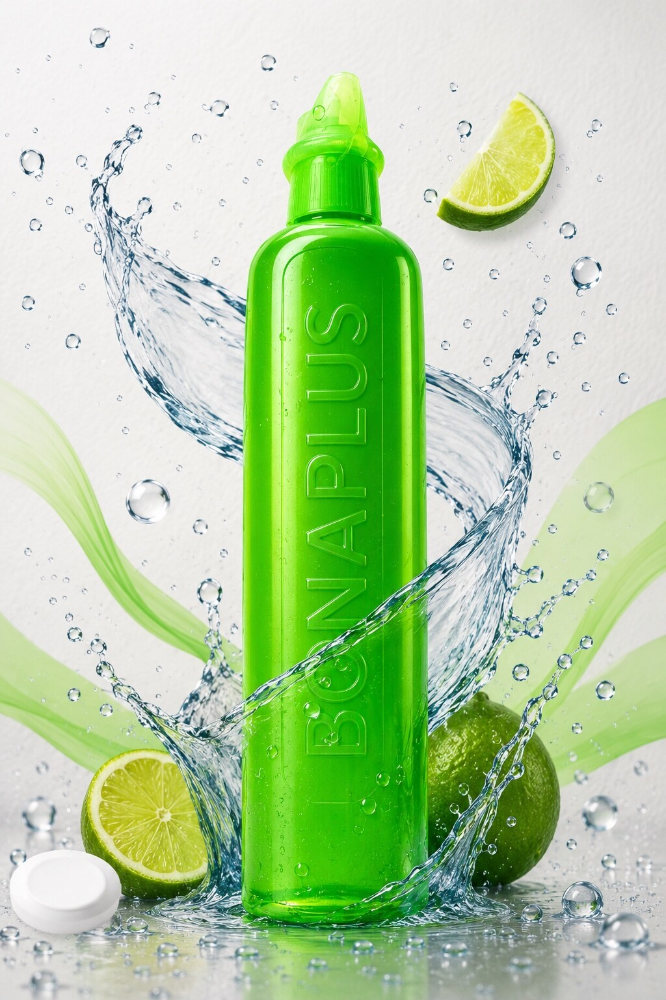

Bonaplus · Venta al por mayor
Lavaplatos líquido Bonaplus al por mayor
Presentación líquida de 150 ml para distribuidores, comercios y compradores por volumen en República Dominicana. Consulta disponibilidad y condiciones directamente con nuestro equipo.
150 mlPedidos por volumenAtención directaCaja de 80 potesSellado térmico

Para negocios y distribuidores
Lavaplatos líquido Bonaplus para abastecimiento mayorista
Bonaplus es la marca de productos de Industria Plus B&G. Los precios se coordinan de forma privada según volumen, disponibilidad y destino.
Arma tu pedido
Indica las cajas aproximadas y combina esta presentación con otros productos del catálogo Bonaplus.
Confirmamos condiciones
Nuestro equipo revisa disponibilidad y la información necesaria para la solicitud.
Coordinamos entrega
Para operaciones en República Dominicana, coordinamos directamente transporte y fecha de entrega.
Lavaplatos líquido Bonaplus 150 ml
Solicita tu cotización mayorista.
Envíanos el volumen estimado y tu ubicación para revisar tu solicitud.